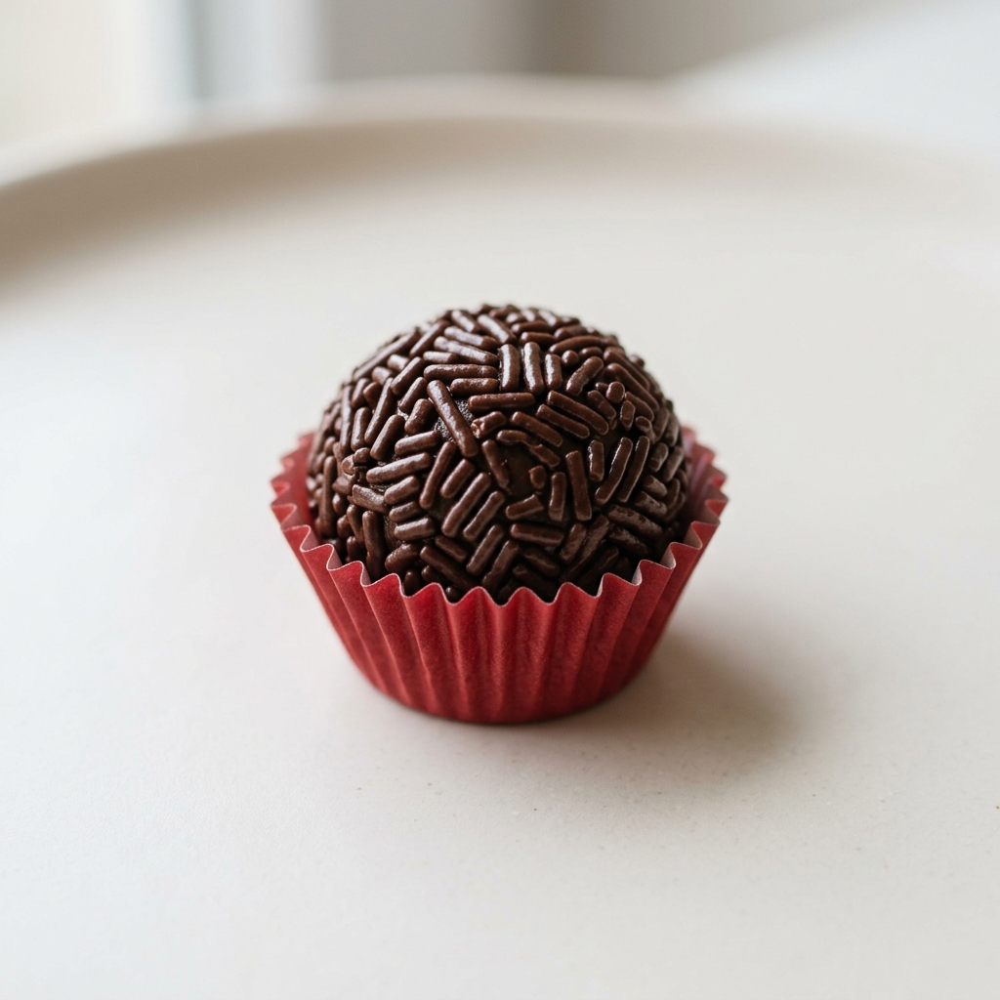
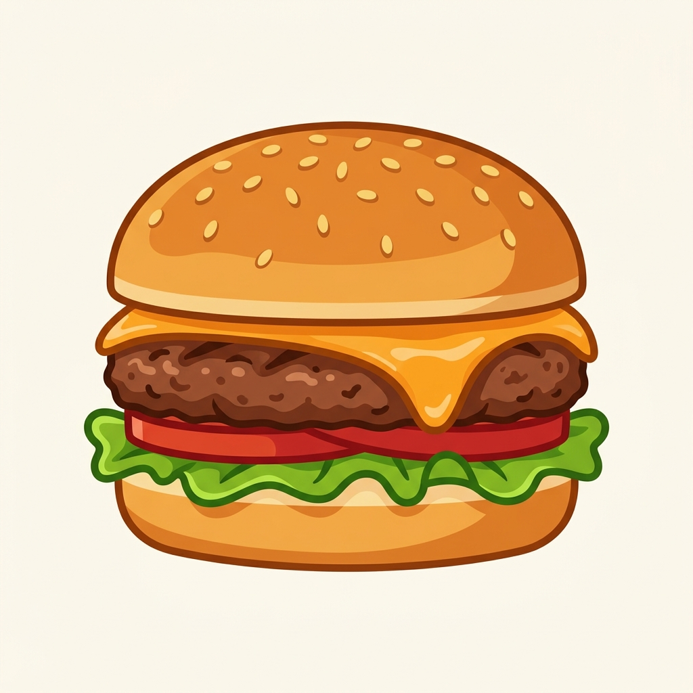
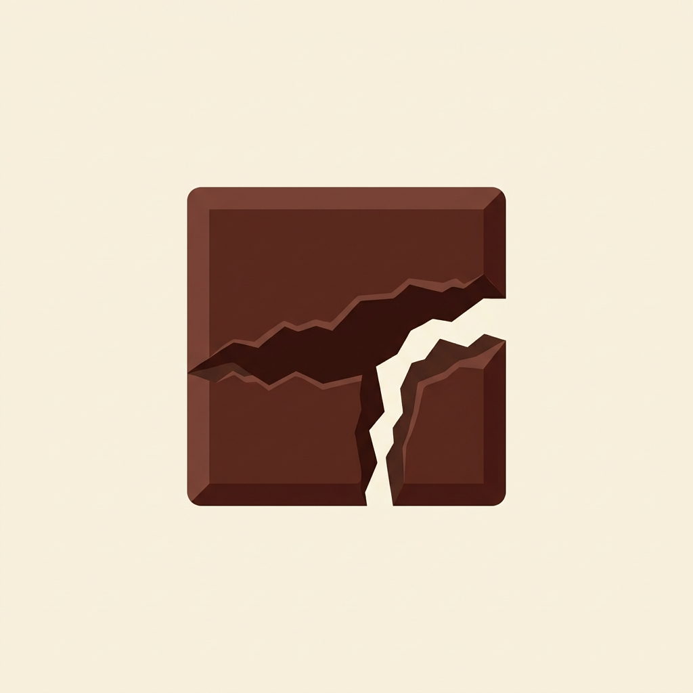
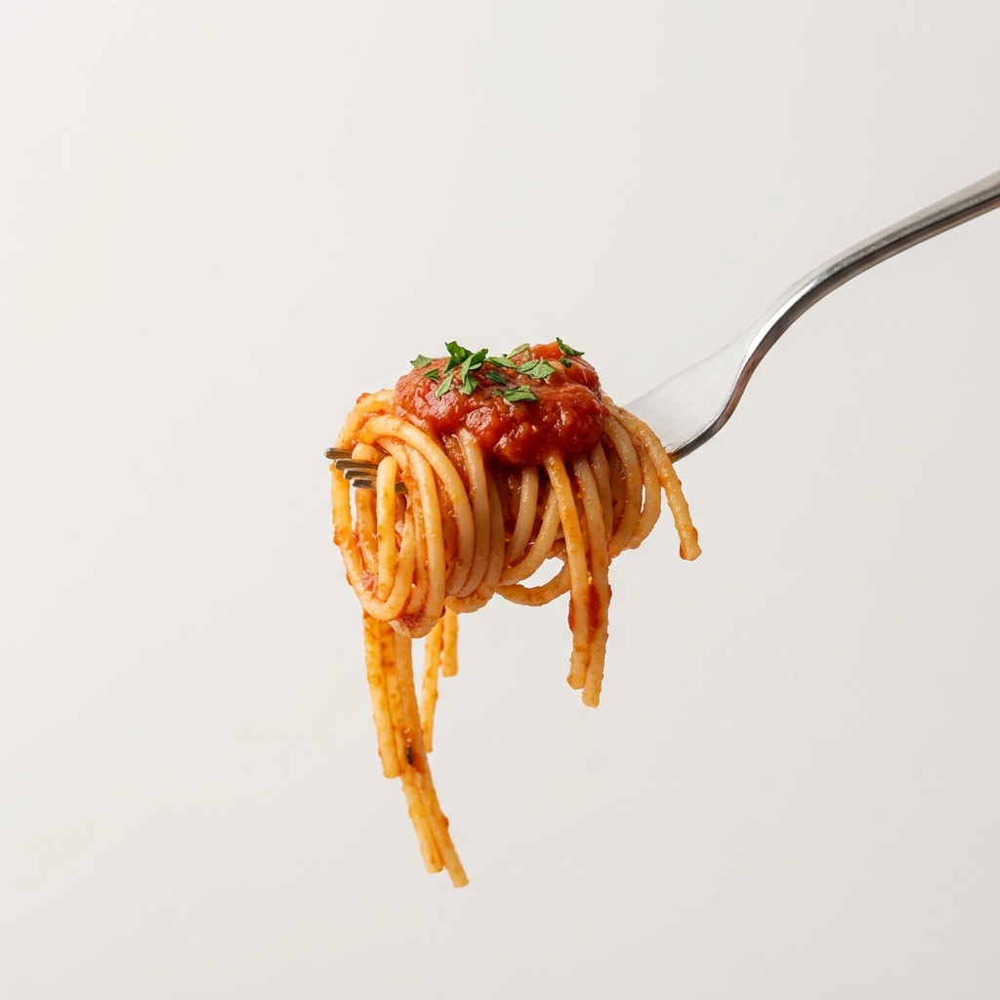

A Origem do Nosso Brigadeiro
Por: Bruna de Lima dos Santos
Você sabia que o brigadeiro é 100% brasileiro? Ele foi criado na década de 1940 para uma campanha política de um brigadeiro da aeronáutica!
Compartilhando paixão por comida e curiosidades do mundo gastronômico.

Por: Bruna de Lima dos Santos
Você sabia que o brigadeiro é 100% brasileiro? Ele foi criado na década de 1940 para uma campanha política de um brigadeiro da aeronáutica!
Por: Bruna de Lima dos Santos
Muito além do peixe cru, o segredo do sushi está no arroz temperado (shari). Uma técnica milenar de conservação que virou arte culinária.
Fonte: Guia do Japão

Por: Bruna de Lima dos Santos
A origem exata é disputada, mas a ideia de carne moída no pão se popularizou nos EUA com imigrantes alemães da cidade de Hamburgo.

Por: Bruna de Lima dos Santos
Para as civilizações antigas como os Maias e Astecas, o cacau era considerado o "alimento dos deuses" e usado até como moeda.
Fonte: História da Comida

Por: Bruna de Lima dos Santos
Diz a lenda que Marco Polo trouxe o macarrão da China para a Itália, mas os italianos já comiam variações de massa muito antes disso!
Por: Bruna de Lima dos Santos
A história conta que um pastor na Etiópia notou que suas cabras ficavam agitadas após comerem as frutinhas vermelhas de um arb